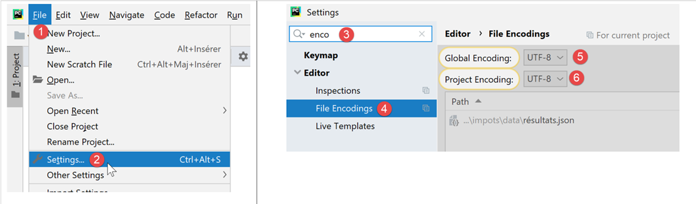
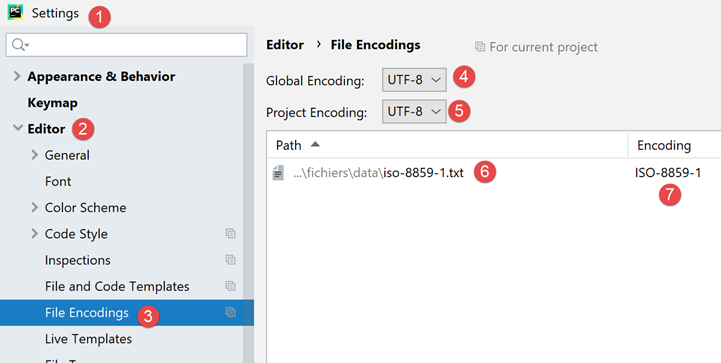

7. Los archivos de texto

7.1. Script [fic_01]: lectura/escritura de un archivo de texto
El siguiente script ilustra un ejemplo de manejo de archivos de texto:
# importaciones
import sys
# creación y posterior procesamiento secuencial de un archivo de texto
# este es un conjunto de líneas con el formato login:pwd:uid:gid:infos:dir:shell
# cada línea se almacena en un diccionario con el formato login => uid:gid:infos:dir:shell
# --------------------------------------------------------------------------
def affiche_infos(dico: dict, clé: str):
# muestra el valor asociado a la clave en el diccionario «dico» si existe
if clé in dico.keys():
# se muestra el valor asociado a la clave
print(f"{clé} : {dico[clé]}")
else:
# la clave no es una clave del diccionario «dico»
print(f"la clé [{clé}] n'existe pas")
# main -----------------------------------------------
# se establece el nombre del archivo
FILE_NAME = "./data/infos.txt"
# creación y llenado del archivo de texto
fic = None
try:
# apertura del archivo en modo de escritura (w=write)
fic = open(FILE_NAME, "w")
# se genera contenido arbitrario
for i in range(1, 101):
# una línea
ligne = f"login{i}:pwd{i}:uid{i}:gid{i}:infos{i}:dir{i}:shell{i}"
# se escribe en el archivo de texto
fic.write(f"{ligne}\n")
except IOError as erreur:
print(f"Erreur d'exploitation du fichier {FILE_NAME} : {erreur}")
sys.exit()
finally:
# se cierra el archivo si se ha abierto
if fic:
fic.close()
# se abre en modo de lectura
fic = None
try:
# se abre el archivo en modo de lectura
fic = open(FILE_NAME, "r")
# diccionario vacío al inicio
dico = {}
# cada línea se agrega al diccionario [dico] en el formato login => uid:gid:infos:dir:shell
# lectura de la primera línea eliminando los espacios al inicio y al final de la línea
ligne = fic.readline().strip()
# siempre que la línea no esté vacía
while ligne != '':
# se coloca la línea en una tabla
infos = ligne.split(":")
# se recupera el nombre de usuario
login = infos[0]
# se omite la contraseña
infos[0:2] = []
# se crea una entrada en el diccionario
dico[login] = infos
# leer la siguiente línea
ligne = fic.readline().strip()
except IOError as erreur:
print(f"Erreur d'exploitation du fichier {FILE_NAME} : {erreur}")
sys.exit()
finally:
# se cierra el archivo si estaba abierto
if fic:
fic.close()
# se utiliza el diccionario «dico»
affiche_infos(dico, "login10")
affiche_infos(dico, "X")
Notas:
- línea 28: apertura del archivo en modo de escritura (w=write). Si el archivo ya existe, se sobrescribirá;
- líneas 30-34: se generan 100 líneas en el archivo de texto;
- línea 34: para escribir una línea en el archivo de texto. El método [write] no agrega el carácter de fin de línea. Por lo tanto, hay que incluirlo en el texto escrito;
- líneas 35-37: manejo de una posible excepción;
- línea 37: se interrumpe la ejecución del script (aunque después de ejecutar la cláusula finally);
- líneas 38-41: en cualquier caso, haya error o no, se cierra el archivo si está abierto;
- línea 47: apertura del archivo en modo lectura (r=read);
- línea 49: definición de un diccionario vacío;
- línea 52: el método [readline] lee una línea de texto, incluido el carácter de fin de línea. El método [strip] elimina los «espacios» al inicio y al final de la cadena. Por «espacio» se entiende un carácter en blanco, un marcador de fin de línea, un salto de página, una tabulación y algunos otros. Por lo tanto, en este caso, [ligne] no incluirá los caracteres de fin de línea de [\r\n] (Windows) ni de [\n] (Unix);
- línea 54: se procesa el archivo hasta que no se encuentre una línea vacía;
- líneas 54-64: el archivo de texto se transfiere al diccionario [dico]. La clave es el campo [login], y el valor, los campos [uid:gid:infos:dir:shell];
- líneas 65-67: manejo de una posible excepción;
- líneas 68-71: cierre del archivo en todos los casos, haya o no un error;
- líneas 74-75: uso del diccionario [dico];
El archivo [data/infos.txt]:
Resultados en pantalla:
C:\Data\st-2020\dev\python\cours-2020\python3-flask-2020\venv\Scripts\python.exe C:/Data/st-2020/dev/python/cours-2020/python3-flask-2020/fichiers/fic_01.py
login10 : ['uid10', 'gid10', 'infos10', 'dir10', 'shell10']
la clé [X] n'existe pas
Process finished with exit code 0
7.2. Script [fic_02]: manejar archivos de texto codificados en UTF-8
En el resto de este documento, vamos a trabajar únicamente con archivos de texto codificados en UTF-8. Primero, configuraremos PyCharm:

- en [5-6]: elegir la codificación UTF-8 para los archivos del proyecto;
Para crear un archivo codificado en UTF-8, se puede proceder de la siguiente manera (fic-02):
# importaciones
import codecs
# escribir en UTF-8 en un archivo de texto
# no se manejan las excepciones
file=codecs.open("./data/utf8.txt","w","utf8")
file.write("Hélène est partie à Bâle pendant l'été chez sa grand-mère")
file.close()
Notas
- línea 2: para gestionar la codificación de los archivos, se importa el módulo [codecs];
- línea 6: el método [codecs.open] se utiliza igual que la función clásica [open]. Sin embargo, se puede especificar la codificación deseada (creación) o la existente (lectura). Después de abrirlo, el objeto [file] obtenido en la línea 6 se utiliza como un archivo convencional;
- línea 7: se han utilizado caracteres acentuados que, en la mayoría de los casos, tienen representaciones diferentes según el código de caracteres utilizado;
Resultados
Al abrir el archivo [data/utf8.txt] obtenido (véase la línea 6), se obtiene el siguiente resultado:

7.3. Script [fic_03]: administrar archivos de texto codificados en ISO-8859-1
El script [fic_03] hace lo mismo que el script [fic_02], pero codifica el archivo de texto en ISO-8859-1. Queremos mostrar la diferencia entre los archivos obtenidos:
# importaciones
import codecs
# escritura en ISO-8859-1 en un archivo de texto
# No se manejan las excepciones
file=codecs.open("./data/iso-8859-1.txt","w","iso-8859-1")
file.write("Hélène est partie à Bâle pendant l'été chez sa grand-mère")
file.close()
Al abrir el archivo [data/iso-8859-1] creado en la línea 6, se obtiene el siguiente resultado:

Como hemos configurado el proyecto para que funcione con archivos UTF-8, PyCharm intentó abrir el archivo [iso-8859-1.txt] como UTF-8. Es capaz de detectar que el archivo [1] no es el UTF-8. Por lo tanto, propone a [2] volver a cargar el archivo con otra codificación:

- en [3-5]: se vuelve a cargar el archivo utilizando una codificación ISO-8859-1;

- a [6], el mismo archivo pero mostrado con una codificación diferente;
Si regresamos a la configuración del proyecto:

- vemos que en [6-7], PyCharm ha registrado que el archivo [iso-8859-1.txt] debía abrirse con la codificación ISO-8859-1. Por lo tanto, se trata de una excepción a la regla [5];
7.4. Script [json_01]: manejo de un archivo jSON
JSON significa «JavaScript Object Notation». Como su nombre lo indica, es un modo de representación textual de los objetos del lenguaje JavaScript. Aquí lo utilizaremos con objetos de Python.
El archivo jSON, gestionado por [data/in.json], será el siguiente:

- En [2], se observa que el contenido de texto del archivo [in.json] podría representar un diccionario de Python. PyCharm ha formateado (Ctrl-Alt-L) este texto, pero aunque estuviera en una sola línea, no cambiaría nada. La forma del texto no tiene importancia alguna siempre y cuando represente sintácticamente un objeto de Python;
El script [json-01] muestra cómo aprovechar este archivo:
# importaciones
import codecs
import json
import sys
# lectura/escritura de un archivo jSON
inFile=None
outFile=None
try:
# apertura del archivo jSON en modo de lectura
inFile = codecs.open("./data/in.json", "r", "utf8")
# transferencia del contenido a un diccionario
data = json.load(inFile)
# visualización de los datos leídos
print(f"data={data}, type(data)={type(data)}")
limites = data['limites']
print(f"limites={limites}, type(limites)={type(limites)}")
print(f"limites[1]={limites[1]}, type(limites[1])={type(limites[1])}")
# transferencia del diccionario [data] a un archivo JSON
outFile = codecs.open("./data/out.json", "w", "utf8")
json.dump(data, outFile)
except BaseException as erreur:
# se muestra el error y se sale
print(f"L'erreur suivante s'est produite : {erreur}")
sys.exit()
finally:
# cierre de los archivos si están abiertos
if inFile:
inFile.close()
if outFile:
outFile.close()
Notas
- línea 3: para manejar JSON, se importa el módulo [json];
- línea 11: vamos a manejar archivos jSON codificados en UTF-8. Aquí abrimos el archivo [data/in.json] con el módulo [codecs];
- línea 13: el método [json.load] lee el contenido del archivo jSON y lo asigna a la variable [data]. El tipo de esta variable será, en este caso, un diccionario;
- líneas 15-18: para demostrar que efectivamente se ha obtenido un diccionario de Python, se muestran algunos de sus elementos;
- líneas 20-21: se realiza la operación inversa: el diccionario [data] se guarda en un archivo con el nombre UTF-8 mediante el método [json.dump];
- líneas 22-25: manejo de una posible excepción;
- líneas 26-31: en cualquier caso, haya error o no, se cierran los archivos que se hayan podido abrir;
Resultados
C:\Data\st-2020\dev\python\cours-2020\python3-flask-2020\venv\Scripts\python.exe C:/Data/st-2020/dev/python/cours-2020/python3-flask-2020/fichiers/json_01.py
data={'limites': [9964, 27519, 73779, 156244, 0], 'coeffR': [0, 0.14, 0.3, 0.41, 0.45], 'coeffN': [0, 1394.96, 5798, 13913.69, 20163.45], 'PLAFOND_QF_DEMI_PART': 1551, 'PLAFOND_REVENUS_CELIBATAIRE_POUR_REDUCTION': 21037, 'PLAFOND_REVENUS_COUPLE_POUR_REDUCTION': 42074, 'VALEUR_REDUC_DEMI_PART': 3797, 'PLAFOND_DECOTE_CELIBATAIRE': 1196, 'PLAFOND_DECOTE_COUPLE': 1970, 'PLAFOND_IMPOT_COUPLE_POUR_DECOTE': 2627, 'PLAFOND_IMPOT_CELIBATAIRE_POUR_DECOTE': 1595, 'ABATTEMENT_DIXPOURCENT_MAX': 12502, 'ABATTEMENT_DIXPOURCENT_MIN': 437}, type(data)=<class 'dict'>
limites=[9964, 27519, 73779, 156244, 0], type(limites)=<class 'list'>
limites[1]=27519, type(limites[1])=<class 'int'>
Process finished with exit code 0
- las líneas 2-4 muestran que se ha recuperado correctamente el diccionario presente en el archivo jSON;
Ahora, veamos el contenido del archivo [data/out.json]:

El texto del archivo está en una sola línea. Sin embargo, PyCharm reconoce los archivos jSON y se pueden formatear, al igual que los archivos de Python y otros, con Ctrl-Alt-L. Entonces obtenemos lo siguiente:

7.5. Script [json_02]: manejo de archivos jSON codificados en UTF-8
Un archivo jSON codificado en UTF-8 puede tener dos formas:
# importaciones
import codecs
import json
import sys
# diccionario
data = {'marié': 'oui', 'impôt': 1340}
# escritura de un archivo jSON
out_file1 = None
out_file2 = None
try:
# transferencia del diccionario [data] a un archivo JSON
out_file1 = codecs.open("./data/out1.json", "w", "utf8")
json.dump(data, out_file1, ensure_ascii=True)
# transferencia del diccionario [data] a un archivo JSON
out_file2 = codecs.open("./data/out2.json", "w", "utf8")
json.dump(data, out_file2, ensure_ascii=False)
except BaseException as erreur:
# se muestra el error y se sale
print(f"L'erreur suivante s'est produite : {erreur}")
sys.exit()
finally:
# cierre de los archivos si están abiertos
if out_file1:
out_file1.close()
if out_file2:
out_file2.close()
…
- En este script, se escribe el diccionario [data] (línea 7) en dos archivos jSON (líneas 14 y 17);
- líneas 14 y 17: en ambos casos, se crea un archivo de texto UTF-8;
- líneas 15: al escribir el diccionario, se utiliza el parámetro denominado [ensure_ascii=True];
- líneas 18: al escribir el diccionario, se utiliza el parámetro denominado [ensure_ascii=False];
Estos son los dos archivos obtenidos:

- en el archivo [out1.json], los caracteres acentuados se han sustituido por una serie de caracteres que representan su código UTF-8. A veces se dice que han sido «escapados». Técnicamente, en el archivo binario [out1.json], para el carácter «é» de [marié] se encuentran sucesivamente los códigos binarios UTF-8 de los 6 caracteres [\u00e9];
- en el archivo [out2.json], los caracteres acentuados se dejaron tal cual. Esto significa que en el binario de [out2.json] estos caracteres están representados por su código binario UTF-8 (es decir, un solo código UTF-8 en lugar de 6 para out1). Para el carácter «é» de [marié], se encontrará así el código binario [00e9] en 4 bytes;
- es el valor del parámetro [ensure_ascii] del método [json.dump] el que determina el formato utilizado;
Algunas aplicaciones utilizan UTF-8 «escapado» para sus archivos jSON. En ese caso, se debe utilizar el valor [ensure_ascii=True]. Este valor es, de hecho, el valor predeterminado. Por lo tanto, si no se utiliza el parámetro [ensure_ascii], se trabajará con archivos jSON y UTF-8 «escapados».
El script continúa de la siguiente manera:
# importaciones
import codecs
import json
import sys
# diccionario
data = {'marié': 'oui', 'impôt': 1340}
…
# revisión de los archivos jSON
in_file1 = None
in_file2 = None
try:
# transferencia del archivo jSON 1 a un diccionario
in_file1 = codecs.open("./data/out1.json", "r", "utf8")
dico1 = json.load(in_file1)
# visualización
print(f"dico1={dico1}")
# transferencia del archivo jSON 2 a un diccionario
in_file2 = codecs.open("./data/out2.json", "r", "utf8")
dico2 = json.load(in_file2)
# visualización
print(f"dico2={dico2}")
except BaseException as erreur:
# se muestra el error y se sale
print(f"L'erreur suivante s'est produite : {erreur}")
sys.exit()
finally:
# cierre de los archivos si están abiertos
if in_file1:
in_file1.close()
if in_file2:
in_file2.close()
Notas
- líneas 11-34: lectura de los dos archivos [out1.json, out2.json] y visualización del diccionario leído en cada caso;
Resultados
Sorprendentemente, se observa que no fue necesario especificar a la función [json.load] (líneas 17, 22) el tipo de codificación (con o sin caracteres de escape) de la cadena jSON que se iba a leer. En ambos casos se recupera el diccionario correcto.